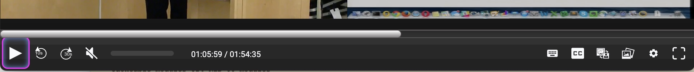
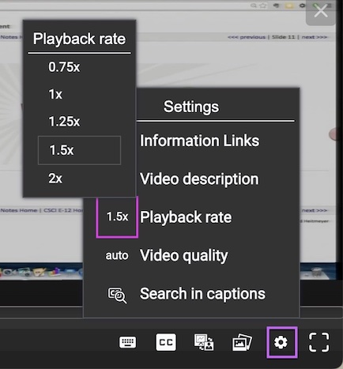
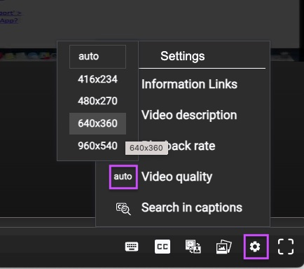
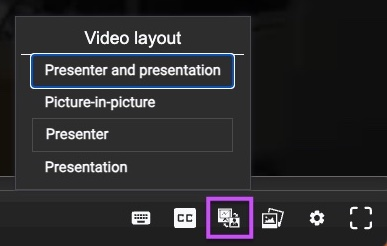
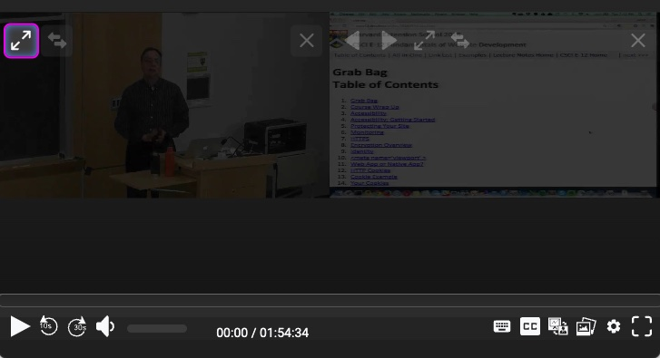
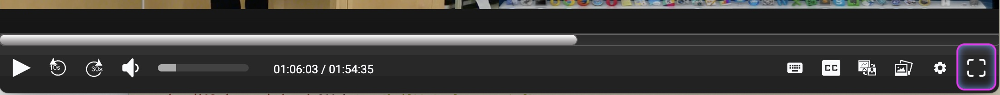
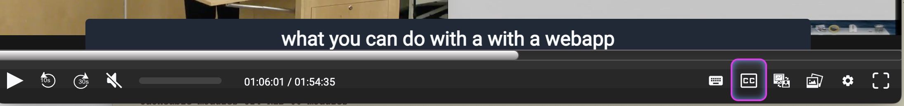
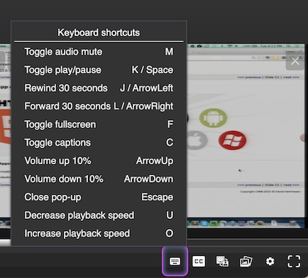

About the Media Player for Video On Demand
Contents
Basic usage
The player displays two videos - the presenter and the presentation - along with some control options on the lower menu bar. You can begin viewing the lecture by pressing the play button on top of the video window or in the control bar.

Speeding up / slowing down playback
You can increase/decrease the playback speed via the playback speed control within the settings tab. Click it and you'll get a set of choices. Select "1x" to set playback speed back to normal.

Change video resolution
If you are experiencing stuttering or jerky playback, the video stream may be more than your available bandwidth can handle. To resolve this, try overriding the auto resolution setting. Click on the player's current resolution displayed in the settings menu to see available options.

Changing the layout of the player
You can switch between several layouts designed to emphasize the camera or the presentation, depending on the current focus of what's happening in the video. For instance, if the instructor is working on a problem you might want to see the projected chalkboard in as much detail as possible. Switching layouts lets you do this.
You switch layouts with "switch layout" tool:

There are also layout controls on the videos:

Viewing lectures in full screen mode
Use the "full screen" tool to maximize the size of the videos in your web browser. Press the escape key to exit, or simply click the control again.

Captions
A closed caption icon (CC) appears on the control bar if the publication contains closed captions. Click closed caption icon to enable captions.

Keyboard shortcuts
Some basic functions of the player can be used with the keyboard.
- SPACE: play-pause
- C: toggle captions
- F: toggle fullscreen
- M: mute
- UP: volume up
- DOWN: volume down
- ESCAPE: exit from fullscreen mode

References
This player is open source and based on the "Paella Engage Player" which is published by the Universitat Politecnica de Valencia under the Educational Community License. For more information https://paellaplayer.upv.es/